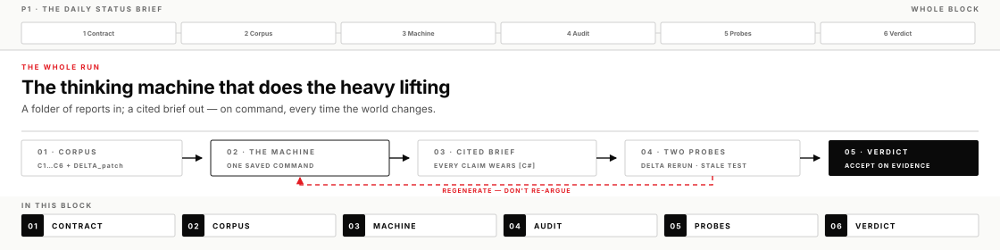
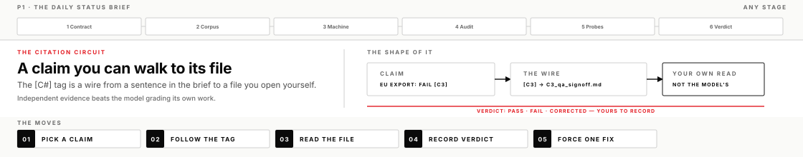
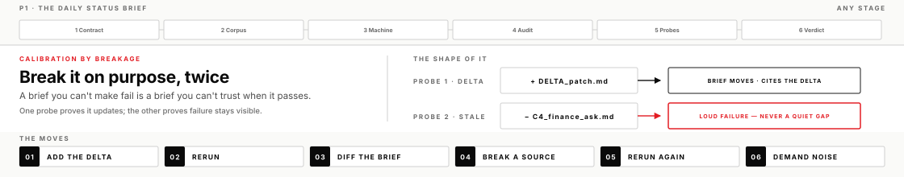

Monday PM · P1 · AI Harness Bootcamp
The Daily Status Brief
You build a brief you can rebuild when the facts change. Not a one-shot chat answer. You pin the sources, fix the format, put a citation on every claim, and save one rebuild command. Then you check the citations yourself and decide what ships.
Start here
By Friday of a normal week, Monday's status page is wrong. Numbers moved. One blocker cleared. A new one landed. Somewhere a page still says otherwise.
Most people handle that by asking a chat model to "summarize the latest." They get a fresh essay every time. Different structure. Different stress. No clear view of what changed. No clear way to tell what is true.
This afternoon you build the other thing. One folder of source reports. One fixed format. A citation on every claim. One saved path that rebuilds the whole brief on command. When the world changes, you rerun it. You can show why you trust the new brief, because you built the checks that catch bad claims.
You will use two P1 chats. P1 — Direction & Closeout saves the release plan and the final closeout. P1 — Daily Brief Build creates, refreshes, and repairs the brief. The saved source list, audit, and release record carry the work between chats. A reader can still follow the decision a month from now.
What you will leave with
- A Direction Brief marked LIVE that pins audience, format, citation rule, accept checks, and stop conditions
- A brief you can rebuild on command: script, skill (a packaged procedure the app can run on matching tasks), or saved one-command path you can show — not a paste job
- A citation audit you ran with your own eyes — five claims, pass or fail recorded, real findings repaired
- A source-list check on the intact folder, plus a current-source refresh that changed only supported lines
- A release record that separates generated content from the decisions you own
- The move itself: you can take any recurring status product on your desk and turn it into a path you own
Before you start
- B1 complete enough that you can open the Codex app and select the course project
- The 30-minute Model Economics discussion is complete, with one model-selection rule ready to carry into this build
- Operator templates present in the project:
DIRECTION_BRIEF.md,OPERATOR_LOG.md - The course repo inside the project Codex has open — open the repo folder as your project, or copy
mission_flesh/p1/into it, somission_flesh/p1/corpus/resolves from where the machine works
Lead operate-along
The lead runs this same page on screen — plan saved, source list checked, brief rebuilt, citations audited, and release decision narrated. Check a box when your own file or observed result exists.
gpt-5.6-terra) for every P1 chat. Do not leave the chat on Default or Sol.

Learn the ideas before you build
Five ideas carry this afternoon. Read them once. Come back when a step needs the reason.
1. A brief you can rebuild
A recurring status product is any output someone acts on again and again: a daily brief, a risk rollup, a watch report, the Monday email your boss forwards upward. Ask a chat model for one and you get a draft — often a good draft. But the process that made it lives inside one conversation. Tomorrow, when the facts move, you re-ask and re-explain. You get a different essay. You cannot account for the changes.
A rebuildable brief puts the structure where you control it. Inputs pinned to a folder. Format fixed in advance. A citation rule stated as law. The run path written down — a script, a skill, or one saved command. The output shape stays fixed while the evidence changes. That is what rebuildable means.
The test is blunt. Could you rebuild tomorrow's brief without re-explaining the mission from memory? Could a colleague, from what is on disk? If the answer is no, you do not own a rebuild path. You own a transcript. That is also what going wrong looks like here: "rebuilding" by re-prompting from memory, so each day's brief is a fork of the truth, and format drift that makes Tuesday impossible to compare with Monday.
2. A citation you can check

Every factual claim in your brief carries a tag like [C3] that maps to a source file. Be precise about what the tag does. It does not make the claim true. Models write fluent claims whether or not the source holds them up. What the tag does is make the claim checkable. You can follow a wire from the sentence to the file, with your own eyes on both ends.
The eyes matter more than the wire. Ask the model "are your citations correct?" and it will grade its own work, usually generously. That is the model grading itself, and it is worth nothing as evidence. Independent evidence means the reading happens outside the system that wrote the claim. You open C3_qa_signoff.md and see whether it really says the EU export failed.
You cannot walk every wire every day, so you sample by risk. Include the highest-cost claims, weak or qualified sources, and claims that merge evidence. A clean sample is a legitimate result. A failed row becomes a specific repair. Fake-looking citations, dropped qualifiers, and source ids that do not exist are the failures this audit is built to catch.
3. Two source checks

The source-list preflight compares the intact input folder with the declared source set before any drafting begins. Missing, unexpected, or duplicate ids stop the run before a fluent brief can hide the mismatch.
The current-source refresh adds newly current material and reruns the same method. A healthy path changes exactly where the evidence changed and holds unrelated sections steady. Together, these checks show what the run read and how the output responded, without damaging the source set for a classroom test.
4. The release plan is the contract
Before the build, save five concrete fields: Outcome, Done looks like, Bounds, Evidence standard, and Stop / hand-back. P1 supplies the structure. You supply the real audience.
Specificity makes release possible. A daily brief for a named reader, with four fixed sections, stable citations, a source-list check, and one rebuild command can be checked line by line. "Keep me posted on status" cannot.
5. Draft versus judgment
The system drafts. You judge. However good the draft, some calls in a status brief are yours and cannot be handed off: what gets printed as fact versus flagged as unverified, what "Blocked" means for this audience, what got left out, whether the thing goes out at all. The log line that separates the two — this is machine draft, this is my judgment — is how responsibility stays where it belongs.
The force working against you here is comfort. The draft arrives fluent and complete. It reads like a finished thing, and editing a finished thing feels like damaging it. Fluency also pretends to be verification. A sentence that sounds checked raises none of the alarm a rough note would. So shipping the system's framing whole is the easy path, and every good draft that goes out untouched makes the next untouched one easier.
Here is the shape of a call that is yours. A source reports an outage it could not reproduce, and says so. Three moves exist: print it as established fact, print it with its status attached, or leave it out for this audience. The first turns a rumor into fact — the caveat was the point. The choice between the other two depends on who is reading, and either way somebody decides. A model will pick one fluently. Only you can own the pick, because when it is challenged, "that is what the AI said" is a defense that does not exist. The brief carries your name. The system is a tool you operate, and tools do not sign things.
Before you move on
Move on when the rebuild path, source list, citation audit, current-source refresh, and release record agree on what is ready and what remains. Full outcome list: these P1 lesson outcomes.
If you get stuck
- Codex cannot find
mission_flesh. The folder exists on disk, but the app works from the project folder that is open. A path outside it will not resolve, and depending on your permission mode it may not be readable at all. Check which folder your project is opened at. Open the course repo as the project, or copymission_flesh/p1/into it. Re-cloning fixes a different problem. - The build keeps sprawling. Re-read the LIVE plan, then narrow the data scope — fewer sections or files — while keeping the source list, citations, audit, and release checks.
- Citations will not stick. The model tags loosely or invents. Do not fix tags by hand — that converts machine error into your error. Reject the draft and restate the rule as an accept check: unresolvable tags fail the run.
- The preflight does not match the intact folder. Compare
SOURCE_MANIFEST.mdwith C1–C6 and the held-back patch. Resolve the mismatch before drafting. Record HOLD if time runs out.
Still blocked on a concept? Ask the lead to diagram the one idea in your way, then continue on your own chair.